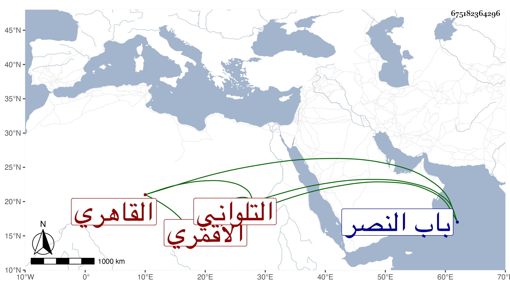

0902Sakhawi.DawLamic.ITO20230111-ara1.EIS1600.675182364296
Biography ID: 675182364296
1145
يوسف بن إبرهيم بن علي بن عمر بن حسن التلواني الأصل القاهري الأقمري سبط ابن الحاجب ، أمه جان خاتون ابنة عمر بن محمد بن الجمالي عبد الله بن بكتمر الحاجب صاحب الأوقاف الكثيرة والمدرسة بجوار الدار الهائلة خارج باب النصر التي لم يبق لاستحقاقها غير بنيها والماضي أبوه وجده ، ممن سمع ختم البخاري في الظاهرية ولم يتصون .
